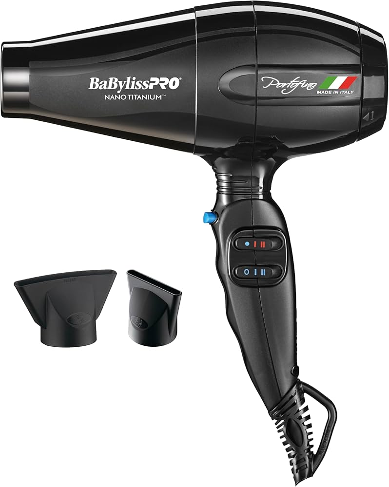

Hair Tools!

BabyBliss
The Babyliss Pro Blow Dryer is a professional-grade hair dryer designed to deliver fast, smooth, and frizz-free results. It features powerful motor technology combined with advanced ionic and ceramic technology to reduce drying time while enhancing shine and minimizing heat damage. This blow dryer is lightweight and ergonomic, making it comfortable to use for extended periods.
Why It`s the best:
Fast Drying Time: The powerful motor reduces drying time significantly, helping you achieve salon-quality results quickly.
Ionic Technology: Helps reduce frizz, static, and flyaways, leaving your hair sleek and shiny.
Lightweight Design: Easy to handle, perfect for professional use or at-home styling.
Ceramic Technology: Evenly distributes heat to prevent damage and preserve hair health.

More BabyBliss
The Babyliss Pro Straightener features nano titanium plates for smooth, shiny, and frizz-free hair. It heats up quickly, offers adjustable temperature settings, and ensures even heat distribution for fast, long-lasting results. Its lightweight, ergonomic design makes it easy to handle, and it’s perfect for all hair types.
*Adds shine and smoothness
*Fast heat-up and even heat distribution
*Sleek, shiny results with minimal frizz
*Lightweight and easy to use
*Ideal for all hair types,from fine to coarse with salon quality.